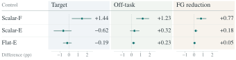
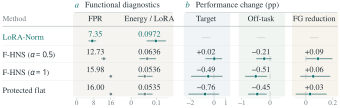

Target
68.00%72.08%
+4.09 ppPost-Training Normalization for LoRA
1 Singapore Management University2 National University of Singapore3 Peking University
† Corresponding authors
Schematic spectrum · HNS 4+1 · log scale
No calibration data. No retraining. No inference overhead.
x⁽⁰⁾ = σ / max(‖σ‖₂, 10⁻⁷)
ffast(x) = x(3.4445 − 4.7750x² + 2.0315x⁴)
fstable(x) = x(2 − 1.5x² + 0.5x⁴)
tᵢ = max(xᵢout, 0) · Σⱼσⱼ / Σⱼmax(xⱼout, 0)
Four fast steps, one stable step, then nuclear-norm restoration. The original directions, scaling, and rank budget stay fixed; Frobenius norm and functional energy can change.

| Task | Target · LoRA | Target · Norm | Off · LoRA | Off · Norm | FG · LoRA | FG · Norm |
|---|---|---|---|---|---|---|
| All 18 | 68.00 | 72.08 | 69.55 | 72.79 | 2.71 | 0.34 |
Target: HumanEval, GSM8K, or IFEval. Off: mean of three non-target categories, including Commonsense-8. FG: mean positive deficit relative to Base; lower is better.
Target improves on 16/18 checkpoints; Off on 15/18. Qwen–Tulu Off falls from 85.63% to 84.93%.
| Method | Target (%) | Off (%) | FG (pp) |
|---|
PARA also compresses adapters. Spectral Surgery uses calibration data and edits o_proj/down_proj; LoRA-Norm edits all seven projection families.
18-checkpoint means under fixed frozen-base inputs. Motion connects measured endpoints.
Energy-matched scaling recovers much of the gain. Stronger functional equalization does not consistently help.
| Method | Target (%) | Off (%) | FG (pp) |
|---|
Scalar-E and Flat-E use activation statistics. Targets for matching come from LoRA-Norm. These controls do not establish a general spectral-shape advantage beyond energy matching.


@misc{tian2026learndirectionsnormalizegains,
title={Learn the Directions, Normalize the Gains:
Post-Training Normalization for LoRA},
author={Zailong Tian and Yanzhe Chen and Zhuoheng Han
and Houfeng Wang and Lizi Liao},
year={2026},
eprint={2610.02067},
archivePrefix={arXiv},
primaryClass={cs.LG},
url={https://arxiv.org/abs/2610.02067}
}